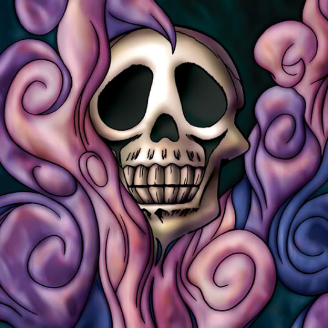

Shadow Specter

Description: "When this card is flipped face-up, all Shadow Specters are increased by 300 points."
STATS
ATK: 500
DEF: 200DECK COST
Deck Cost per Card: 12EFFECT NOT IMPLEMENTED
Fusion List (57 Possible Fusions)
- Shadow Specter + Abyss Flower = Wood Remains
- Shadow Specter + Ancient Jar = Stone Ghost
- Shadow Specter + Ancient Tree of Enlightenment = Wood Remains
- Shadow Specter + Armed Ninja = Zombie Warrior
- Shadow Specter + Bean Soldier = Pumpking the King of Ghosts
- Shadow Specter + Blackland Fire Dragon = Dragon Zombie
- Shadow Specter + Blast Juggler = Flame Ghost
- Shadow Specter + Boo Koo = Magical Ghost
- Shadow Specter + Candle of Fate = Fire Reaper
- Shadow Specter + Celtic Guardian = Armored Zombie
- Shadow Specter + Dark Plant = Wood Remains
- Shadow Specter + Darkworld Thorns = Pumpking the King of Ghosts
- Shadow Specter + Dissolverock = Stone Ghost
- Shadow Specter + Dragon Zombie = Skelgon
- Shadow Specter + Dragoness the Wicked Knight = Armored Zombie
- Shadow Specter + Eyearmor = Zombie Warrior
- Shadow Specter + Fire Eye = Flame Ghost
- Shadow Specter + Fire Reaper = Flame Ghost
- Shadow Specter + Firegrass = Wood Remains
- Shadow Specter + Flame Manipulator = Magical Ghost
- Shadow Specter + Flame Snake = Fire Reaper
- Shadow Specter + Graveyard and the Hand of Invitation = The Snake Hair
- Shadow Specter + Greenkappa = Zombie Warrior
- Shadow Specter + Griggle = Wood Remains
- Shadow Specter + Hinotama Soul = Fire Reaper
- Shadow Specter + Hurricail = Magical Ghost
- Shadow Specter + Kagemusha of the Blue Flame = Zombie Warrior
- Shadow Specter + Kageningen = Zombie Warrior
- Shadow Specter + Key Mace = Battle Warrior
- Shadow Specter + Koumori Dragon = Dragon Zombie
- Shadow Specter + Lady of Faith = Magical Ghost
- Shadow Specter + Laughing Flower = Wood Remains
- Shadow Specter + Lesser Dragon = Dragon Zombie
- Shadow Specter + M-Warrior #2 = Zombie Warrior
- Shadow Specter + Mammoth Graveyard = Great Mammoth of Goldfine
- Shadow Specter + Man-Eating Plant = Wood Remains
- Shadow Specter + Man Eater = Wood Remains
- Shadow Specter + Masked Clown = Zombie Warrior
- Shadow Specter + Muka Muka = Stone Ghost
- Shadow Specter + Mushroom Man = Wood Remains
- Shadow Specter + Mystic Lamp = Magical Ghost
- Shadow Specter + Mystical Elf = Magical Ghost
- Shadow Specter + One-Eyed Shield Dragon = Dragon Zombie
- Shadow Specter + Petit Dragon = Dragon Zombie
- Shadow Specter + Phantom Dewan = Magical Ghost
- Shadow Specter + Pot the Trick = Stone Ghost
- Shadow Specter + Queen's Double = Zombie Warrior
- Shadow Specter + Skelgon = Curse of Dragon
- Shadow Specter + Skull Stalker = Zombie Warrior
- Shadow Specter + Sword Arm of Dragon = Curse of Dragon
- Shadow Specter + Swordsman from a Foreign Land = Zombie Warrior
- Shadow Specter + Tentacle Plant = Wood Remains
- Shadow Specter + The Bewitching Phantom Thief = Magical Ghost
- Shadow Specter + Time Wizard = Magical Ghost
- Shadow Specter + White Dolphin = Corroding Shark
- Shadow Specter + Wood Clown = Zombie Warrior
- Shadow Specter + Yamatano Dragon Scroll = Dragon Zombie